Welcome to Silver Photography & Design
Website Structure:
- About: To learn more about our photographer, Sylvia Zuniga, click here.
- Catalog: To learn more about the services offered and the prices, click here for the full catalog.
- Contact: To set up a free consultation, click here.
About
My name is Sylvia Zuniga, and my journey with photography began in 2015 when my mother gifted me an old Nikon camera.
Despite its limitations, I quickly learned to harness its potential, capturing stunning wildlife images through patience and practice.
Over time, my passion for photography grew, and wildlife became my primary focus.
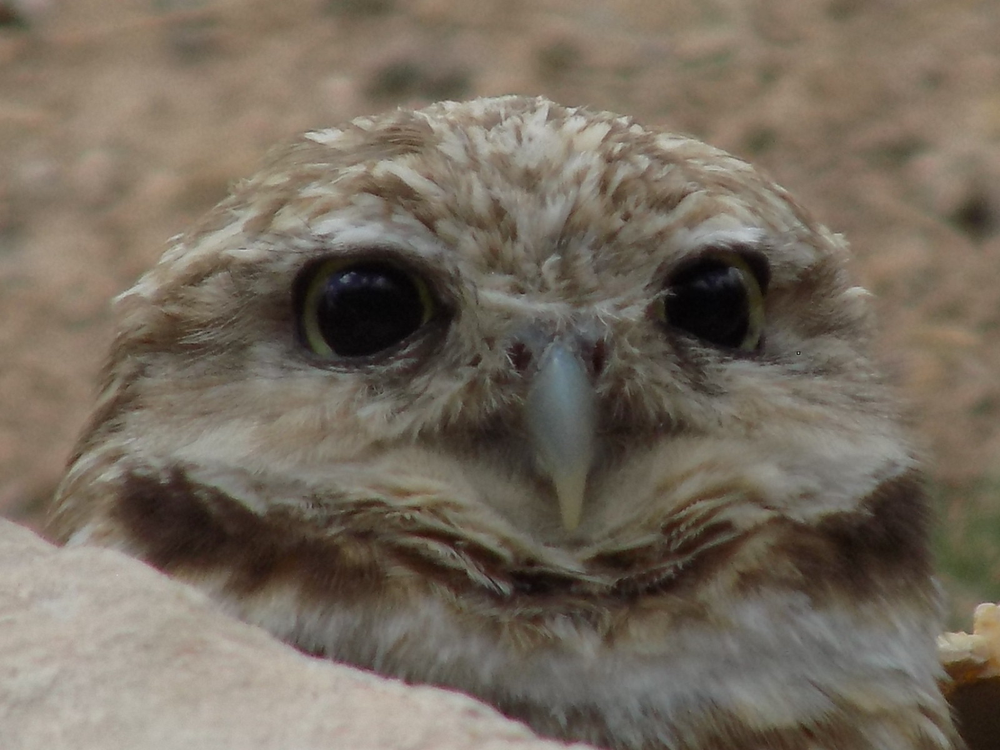
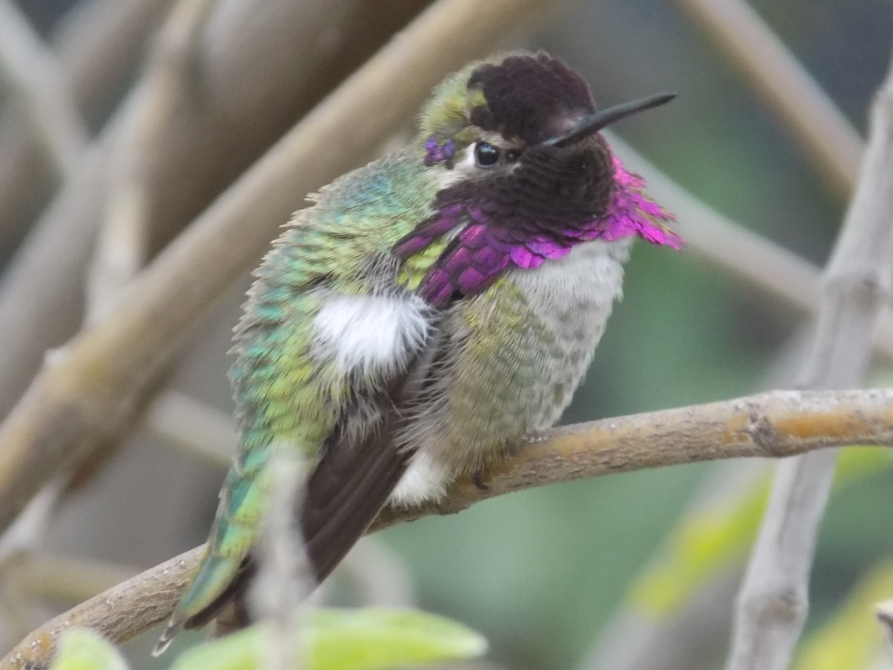
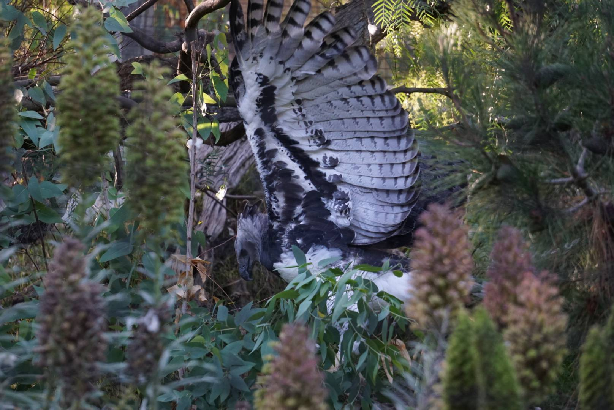
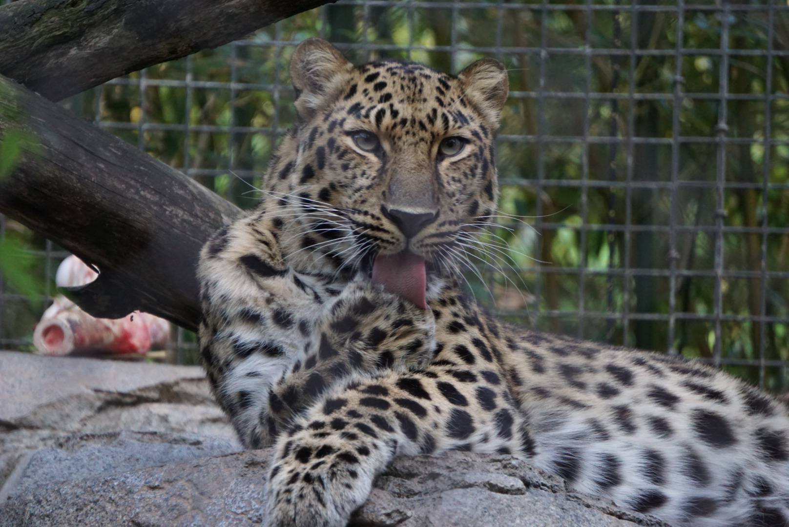
In 2024, I was introduced to client work when I was commissioned to photograph a bridal shower, wedding ceremony, and reception. Initially taking on the project as a favor, I was deeply moved by the joy my photographs brought to the couple.
This experience was transformative, revealing a new dimension to my work, and I realized how fulfilling it was to create lasting memories for others.


As a result, I upgraded my equipment and expanded my craft into portrait and event photography.
In addition to photography, I pursued graphic design training in 2022, which allowed me to explore new creative outlets.
I now design posters, flyers, invitations, and other forms of art, both for myself and clients, with a focus on blending personal style with each project’s unique needs. As an artist working across multiple mediums, I strive to create designs and photographs that resonate with both my personality and the vision of those I work with.
Catalog & Prices

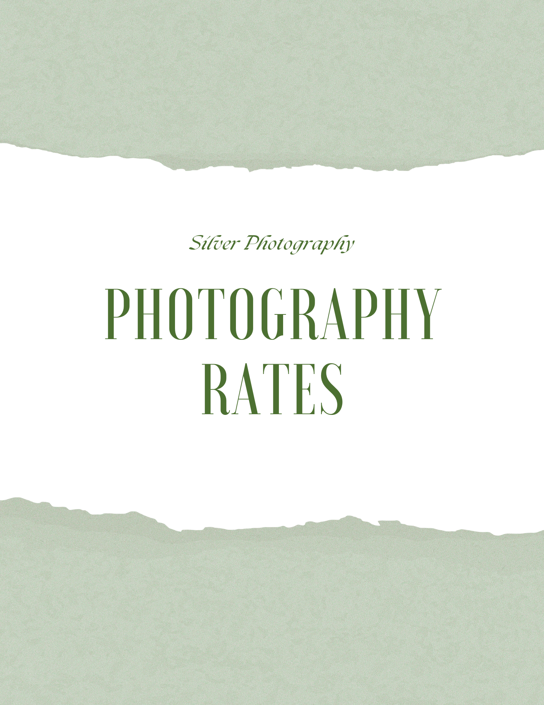
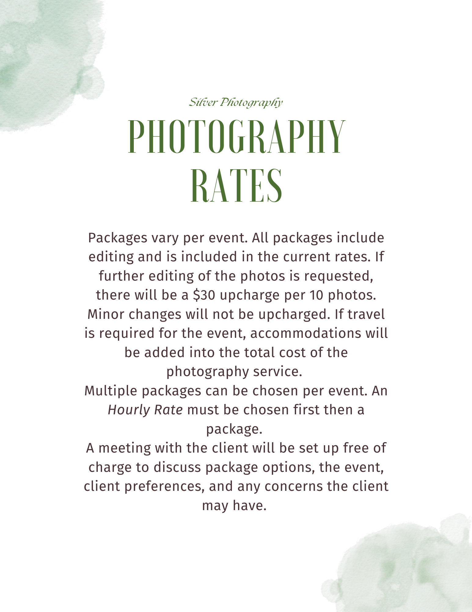
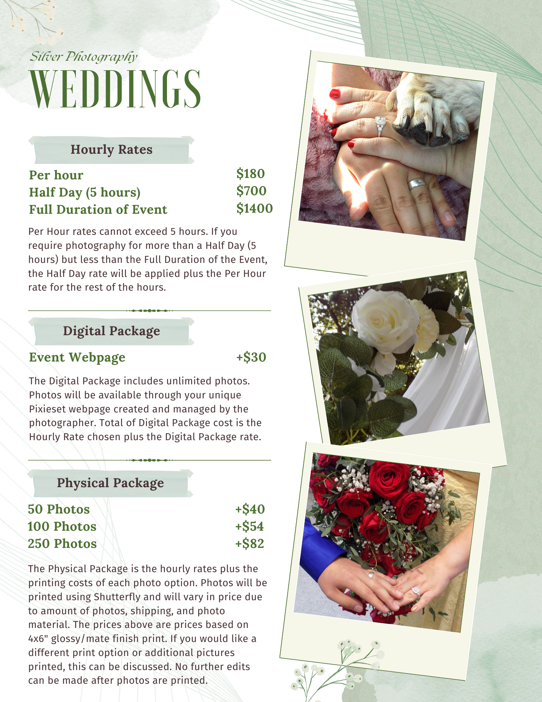
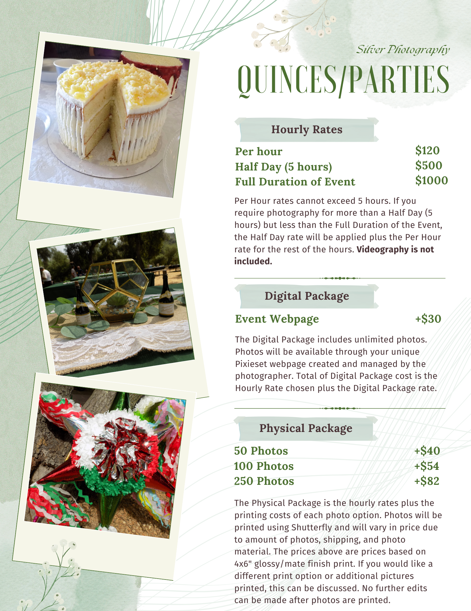
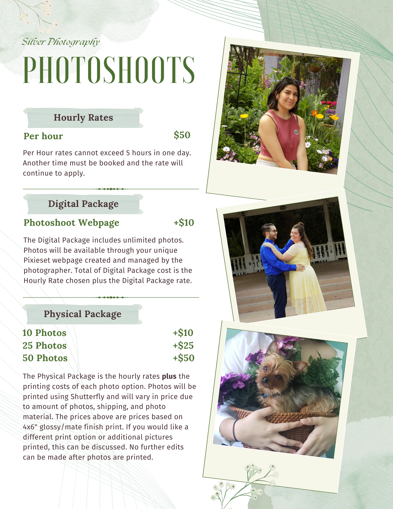
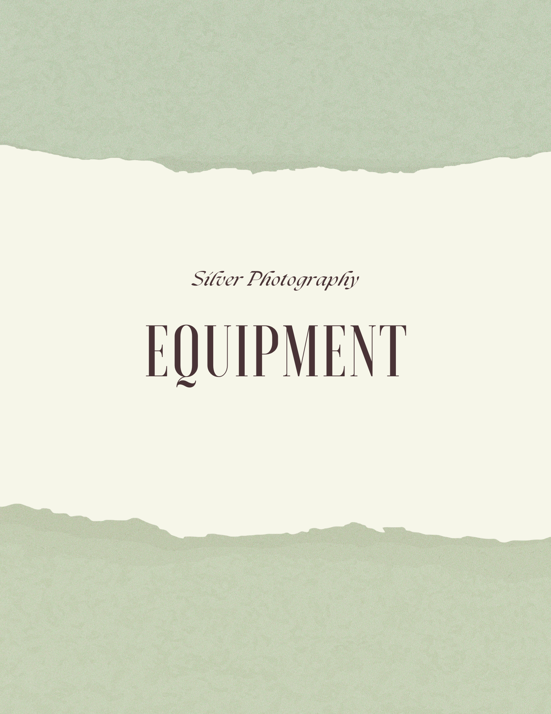
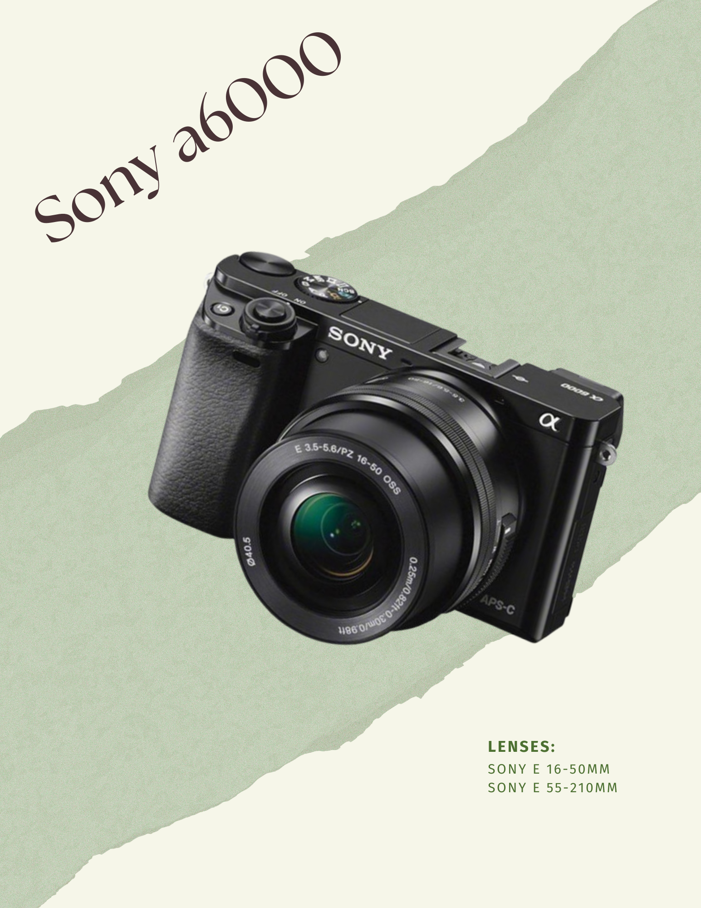
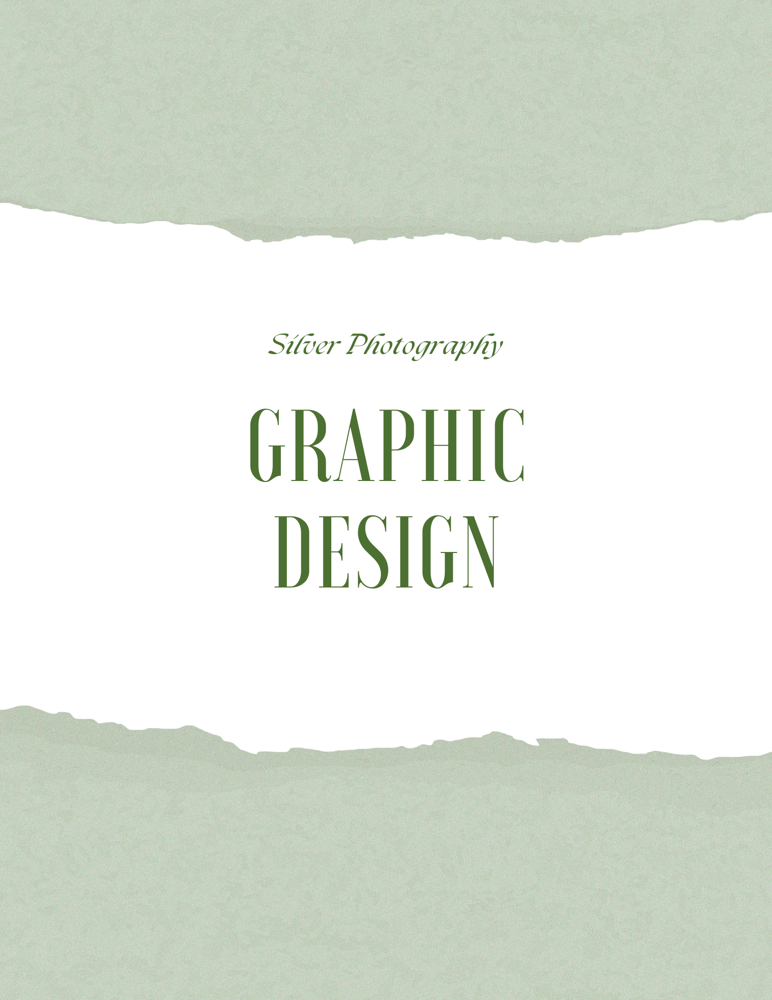
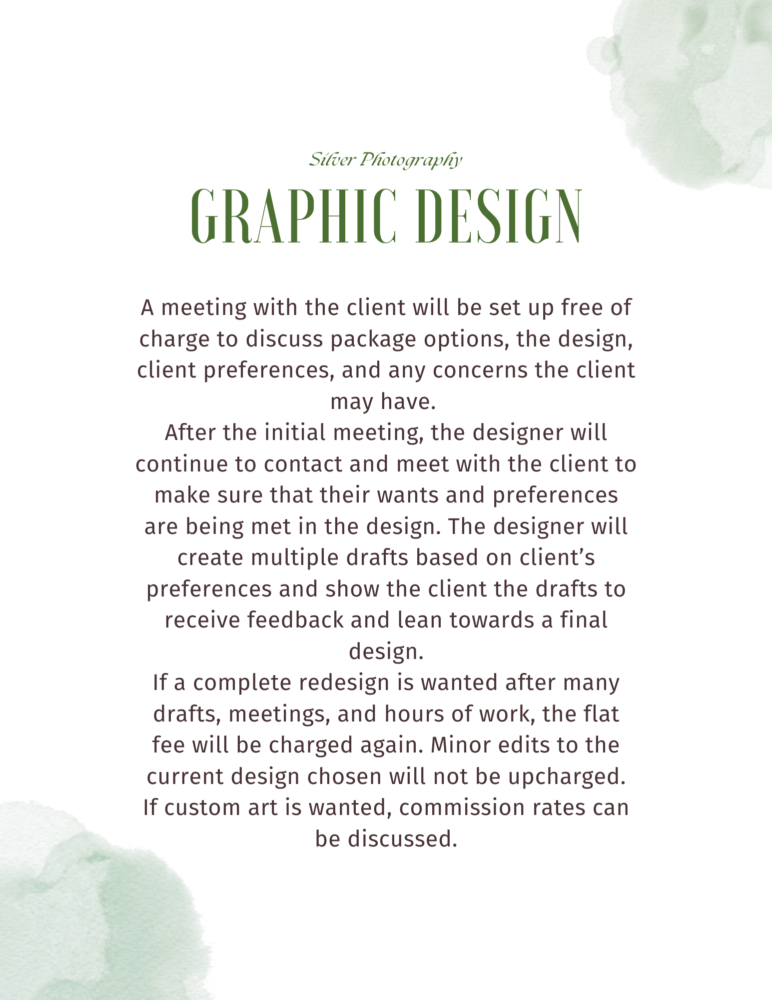
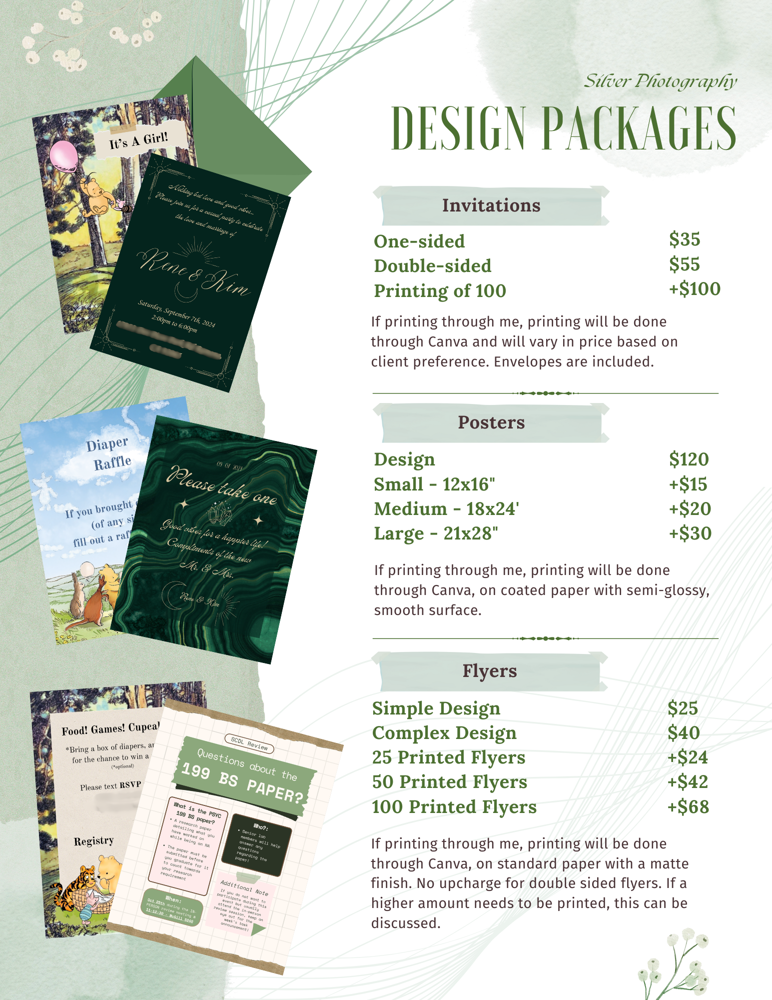

Contact
If you would like to contact me for a free consultation
Email: szuniga2908@gmail.com
Text: (619) 252-0526
Thank you for considering Silver Photography & Design!